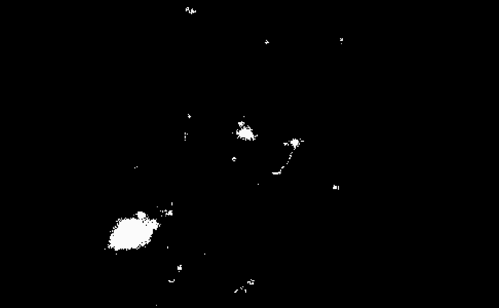
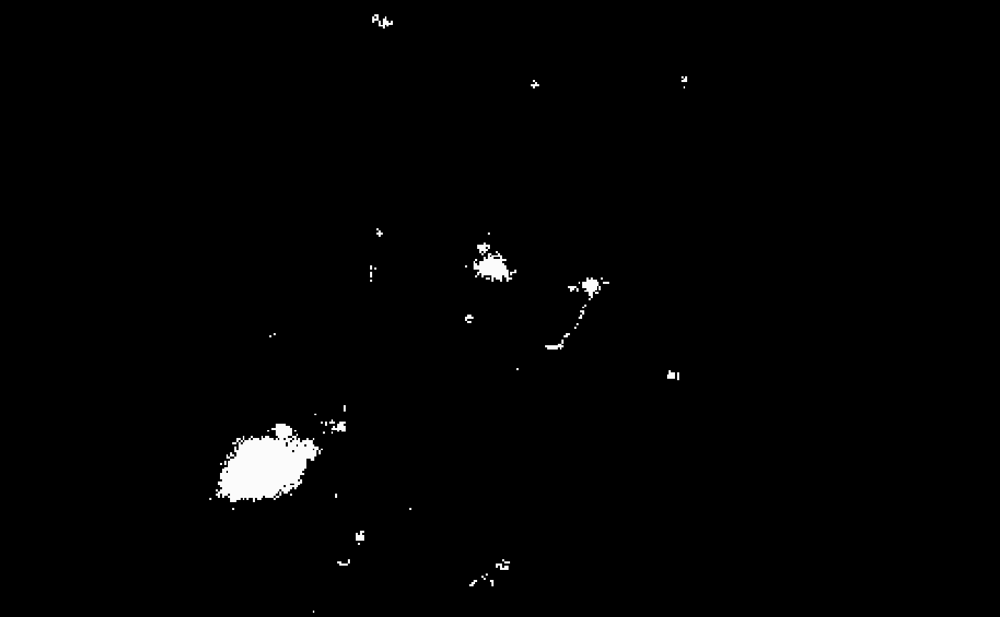
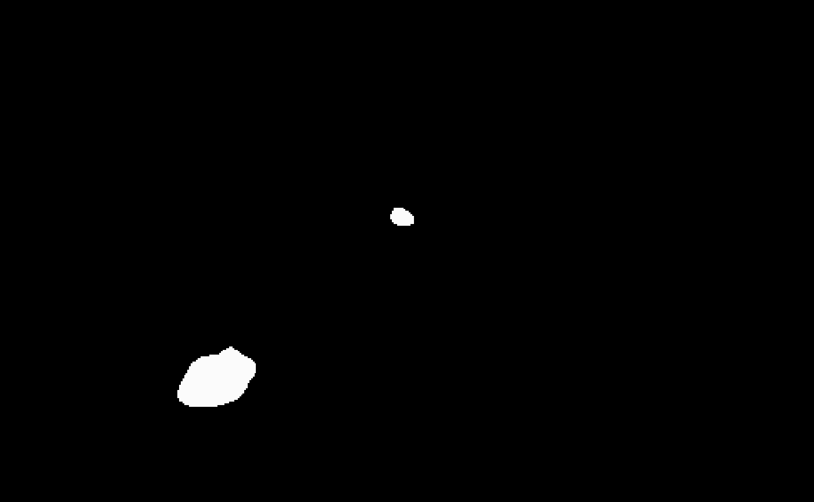
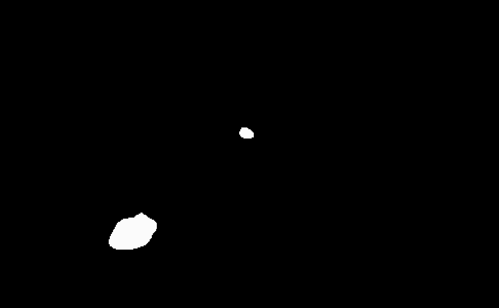
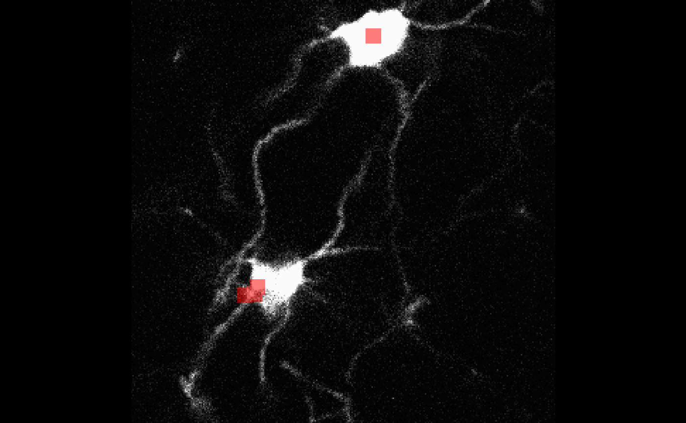

Install the companion package to follow along the vignette:
install.packages('bossrdata', repos = 'https://pennsive.github.io/drat', type='source').
The oligo dataset in bossrdata consists of
a small 4D array from a region-of-interest in cortex from an adult
transgenic mouse expressing EGFP in the cytoplasm of oligodendrocytes
(MOBP-EGFP). This same region was imaged at least weekly using
two-photon imaging through a cranial window over the course of
cuprizone-treatment and recovery.
# Oligo is a 4D array
str(oligo)
#> num [1:300, 1:300, 1:81, 1:4] 0.00391 0.11328 0.03125 0.02344 0.10938 ...The array functions in bossr are easily parallelizable and detect
dimensionality of the input array. The first function in the pipeline,
bossr::betamix_img(), produces a threshold for each slice
of an array.
n.cores = parallel::detectCores() # detect cores automatically (or can also be set manually)
thr <- bossr::betamix_img(oligo, n.cores = n.cores)The resulting threshold can be applied with
bossr::threshold_img(), which produces a mask.
mask <- bossr::threshold_img(oligo, thr, n.cores = n.cores)Below, we visualize the results of the masking operation for
z=1 and t=1. To the left the original array;
to the right the resulting mask.
 

After thresholding, bossr::median_filtering() is applied
to reduce noise in the mask.
mask_filtered <- bossr::median_filtering(mask) 

And once the mask has been filtered,
bossr::connect_components() will detect individual cells
via a connected components algorithm. This operation will result in
distinct labels being produced for each cell.
labels <- bossr::connect_components(mask_filtered)To produce a description of the location and size of each cell, we
use bossr::track_components() followed by
bossr::post_process_df() to perform imputation of cells
across timepoints. These two functions output a data.frame
and can be easily piped.
cell_df <- bossr::track_components(labels) |>
bossr::post_process_df()
head(cell_df)
#> index size x y z t
#> 1 13 11960 172.40067 275.39574 67.057191 1
#> 2 21 21262 45.96411 74.79179 7.347945 1
#> 3 13 5542 145.61133 270.05720 63.817936 2
#> 4 14 144 274.56944 270.63889 41.395833 2
#> 5 15 185 256.75676 286.34595 33.967568 2
#> 6 21 4741 45.63847 76.38220 6.109682 2A summary of how cell counts change over time can be produced with
bossr::annotate_df() (see function reference for details on
column meanings).
bossr::annotate_df(cell_df, t = 4)
#> t count added deleted survivor
#> 1 1 2 NA NA NA
#> 2 2 4 2 0 2
#> 3 3 1 1 4 0
#> 4 4 1 1 1 0Then, we can produce a 3D overlay that draws a box around each cells
centroid with bossr::make_overlay(): we just need to pick a
time point and specify the overlay dimensions.
my_overlay <- bossr::make_overlay(cell_df, dim(oligo), t = 1)For t = 1 the first cell in cell_df has a
centroid at z = 67: to help us examine the correctness of
this entry, we can use bossr::plot_overlay() which takes a
3D image, an overlay made by bossr::make_overlay() and
chosen slice z. We
bossr::plot_overlay(oligo[,,,1], my_overlay, z = 67)
We see that the centroid is correctly specified for the upper cell.
The bottom cell’s centroid is at z = 7 so it won’t show up
in this slice.
bossr::plot_overlay(oligo[,,,1], my_overlay, z = 7)